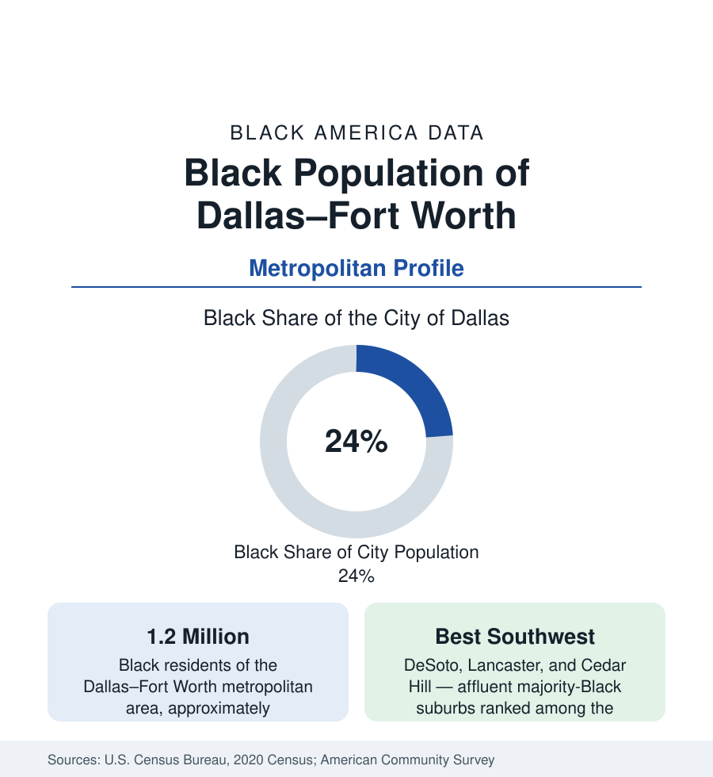

Black Cities
Black Dallas: The Metroplex's Southern Half
Dallas–Fort Worth holds about 1.2 million Black residents. The city of Dallas is roughly one in four Black, and its southwestern suburbs include some of America's most affluent Black communities.

The Dallas–Fort Worth metroplex — the fourth-largest metropolitan area in the United States — holds about 1.2 million Black residents, and the city of Dallas itself about 300,000, roughly one in four of its people. Black Dallas presents the suburban pattern of Black Texas in its most developed form: a historic core community in the city's southern half, and around it, in the suburbs locally marketed as the Best Southwest, some of the most affluent majority-Black municipalities in America. This article profiles the metro's Black population in the census data.
South Dallas and the Historic Core
Black Dallas was built in the communities south of downtown — the freedmen's towns and neighborhoods that grew along the Trinity River and the rail lines: Deep Ellum's northern edges, South Dallas, Fair Park, and the Oak Cliff district across the river, which today holds a large share of the city's Black population within its own extensive geography. The State-Thomas area, one of the oldest freedmen's communities in Texas, survives as a designated historic district just north of downtown. As in Houston, the institutions followed: Bishop College, a historically Black institution, operated in Oak Cliff for decades before its closure, and Paul Quinn College — founded in the nineteenth century and among the oldest HBCUs west of the Mississippi — carries the tradition today, alongside the congregations and businesses of the southern sector.
The Best Southwest
The demographic distinction of Black Dallas is suburban and southern-tier. DeSoto, Lancaster, Cedar Hill, and Duncanville — the cluster southwest of the city nicknamed the Best Southwest — include majority-Black suburbs with median household incomes above the metro's overall median, a combination found in only a handful of American geographies, among them Prince George's County outside Washington. These communities were built substantially by Black Dallas families moving south from Oak Cliff and South Dallas in the late twentieth century, and they record the survey profile of established professional suburbs: high homeownership, high attainment, and local governments led by the population they house. Fort Worth, the metroplex's western anchor, holds its own historic Black community on the city's east and southeast sides, and the mid-cities and Arlington add growing suburban populations between the two cores.
Growth and Composition
Dallas–Fort Worth is among the fastest-growing large metros in the nation, and its Black population grows with it — through natural increase, through the domestic migration stream documented in the Texas state profile, and through African immigration that has given north Dallas and its suburbs substantial Nigerian, Ethiopian, and other African communities. The metro's Black indicators run above national Black averages on income and attainment, pulled up by the suburban weight of the distribution, while the historic core neighborhoods of South Dallas record indicators well below the metro Black average — the standard wide dispersion of this section's growth-metro profiles, in which the average describes a population distributed between some of the most and least prosperous Black geographies in Texas.
Reading the Dallas Numbers
Two Anchors, One Metroplex
The metroplex form itself shapes the data. Dallas and Fort Worth are separate central cities thirty miles apart, and Black Tarrant County — Fort Worth's historic east side and the suburbs of Arlington, Grand Prairie, and Mansfield — adds several hundred thousand Black residents whom a Dallas-only account would miss. The two counties' Black populations differ in profile: Dallas County's is older-established and more suburbanized into the southern tier, Tarrant's more concentrated in its central city and growing suburbs. Regional planners' data treat the metroplex as one labor and housing market, and this reference follows them: the profile's headline figure is the combined one, and the county tables beneath it keep the two anchors distinct.
The Dallas profile's discipline mirrors Houston's, eighty miles of Texas away in pattern if not in distance: quote the metro, not the city, for the population's true scale — 1.2 million, top-ten among American metros — and quote the suburbs, not the historic core alone, for its center of gravity. The movement from freedmen's towns to the Best Southwest within a few generations is the single arc the census tables record, and the tract profiles in this section trace it street by street.
More in Black Cities
Black Atlanta: Population, Distribution, and Growth of a Black Metropolis
Metro Atlanta holds more than two million Black residents — roughly one in three, second only to New York. The suburban distribution, migration history, and composition of Black Atlanta in the census data.
Black New York: The Largest Black Population in America
The New York metropolitan area holds about 3.4 million Black residents — more than any metro in the nation — and the city itself about two million. The census profile.
Black Washington: The District and the Metro
The Washington metro holds about 1.6 million Black residents, and the District itself — long a majority-Black city — now records a Black share near 41 percent. The census profile.
Source: U.S. Census Bureau, 2020 Census; American Community Survey; Population Estimates Program.